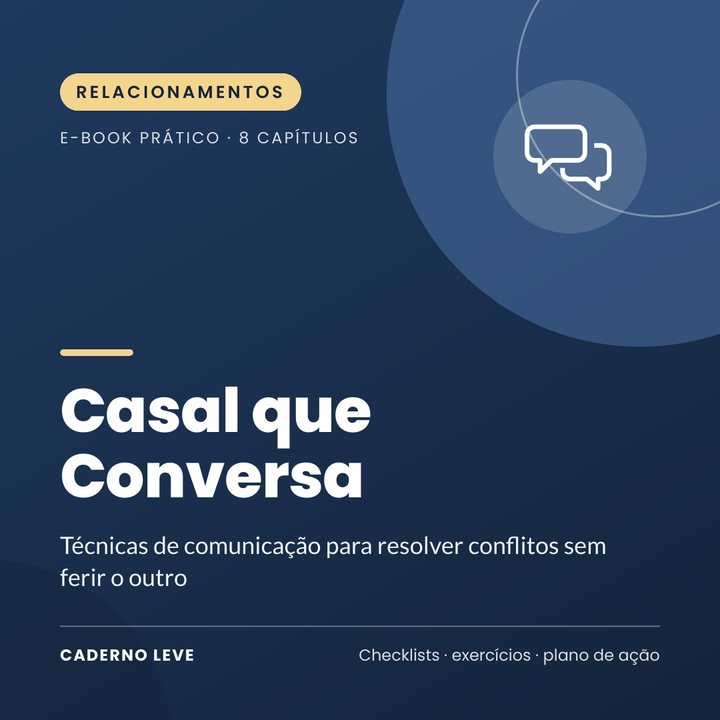

Casal que Conversa: Menos Brigas, Mais Diálogo
Técnicas de comunicação para resolver conflitos sem ferir o outro: começo suave, escuta de verdade, pausa, reparo e acordos. Com plano de 4 semanas para o casal.
A briga começa com a louça e termina em algo de três anos atrás? Dá para discordar sem ferir, e este e-book mostra como.
O Casal que Conversa é um e-book prático, em linguagem simples, para casais que querem brigar menos e conversar melhor. Ele reúne técnicas de comunicação baseadas em pesquisas sobre relacionamentos e em programas de educação para casais.
Vocês aprendem a reconhecer os quatro venenos da conversa, a começar um assunto difícil sem atacar, a escutar de verdade, a pausar quando a briga esquenta, a pedir desculpas e reparar e a negociar os temas que sempre voltam.
O que você vai conquistar
- Reconhecer e trocar os quatro venenos da conversa
- Começar conversas difíceis sem atacar
- Escutar e se sentir escutado(a) com a técnica do falante e do ouvinte
- Fazer pausas que funcionam quando a briga esquenta
- Pedir desculpas e reparar depois de uma discussão
- Negociar acordos sobre dinheiro, tarefas e família
O que tem dentro
- Capítulo 1Brigar não é o problema
- Capítulo 2Os quatro venenos da conversa
- Capítulo 3Começando a conversa do jeito certo
- Capítulo 4Escutar de verdade
- Capítulo 5Quando a briga esquenta: a pausa
- Capítulo 6Reparar: pedir desculpas e se reconectar
- Capítulo 7Os temas que sempre voltam
- Capítulo 8Conexão diária e ajuda profissional
- ExtraResumo e plano de ação para colocar em prática
- ExtraFolha de trabalho e checklist para imprimir
Para quem é
- Casais que brigam muito pelos mesmos motivos
- Quem sente que não é ouvido(a) na relação
- Casais que querem cuidar da relação antes que o desgaste aumente
Para quem não é
- Não substitui terapia de casal ou individual
- Não é indicado para relações com violência: nesses casos, a prioridade é a segurança (Ligue 180, 190)
Bônus: Folha de trabalho do casal — roteiro para conversas difíceis, quadro de acordos e checklist, além de um plano de 4 semanas.
Aviso importante
Este e-book tem caráter educativo e de autocuidado. Ele não faz diagnóstico, não é tratamento e não substitui psicoterapia nem acompanhamento médico. Se o sofrimento estiver intenso, durando muito tempo ou atrapalhando sua vida, procure um(a) psicólogo(a), um médico ou a Unidade Básica de Saúde (UBS) mais próxima.
Se você precisar conversar agora, o CVV atende de graça, 24h, no 188 ou em cvv.org.br. Em emergência, ligue SAMU 192.